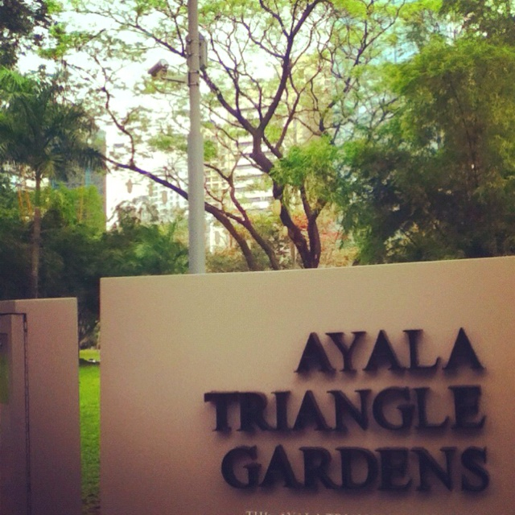
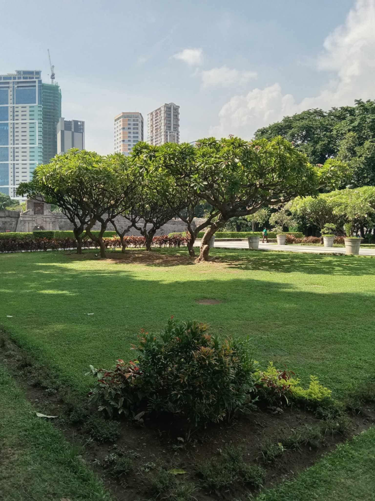
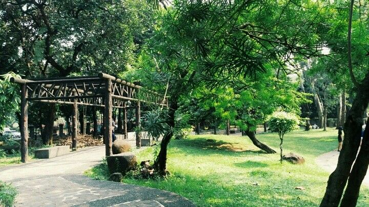
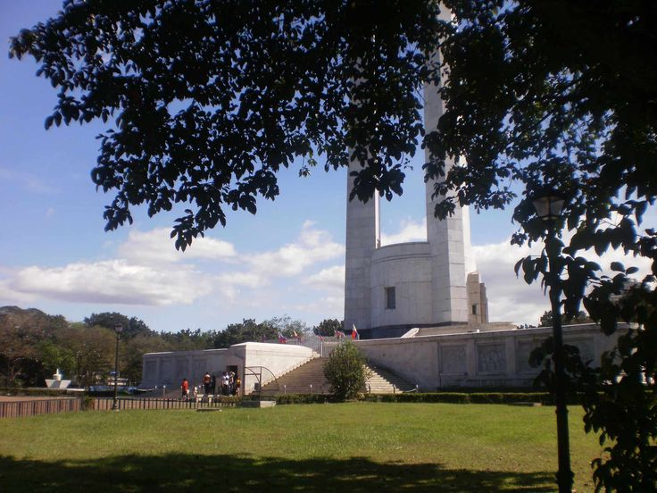

Ayala Triangle Gardens
8777 Paseo de Roxas, Makati, Metro Manila·
If the city has left you a little tired, perhaps you could spend some time here.
Ayala has its quiet corners where you can sit, have a little picnic, and simply watch the world pass by.

Read more
Fort Santiago
1002 Mel Lopez Boulevard, Manila, Metro Manila
If you fancy a place with old stories and quiet corners,
Fort Santiago may be just the place for you. Bring a little picnic,
take a gentle walk through its historic grounds, and
let the past keep you company for an afternoon.

Luneta Park - Chinese Garden
Ermita, Manila, Metro Manila
Maybe you are looking for somewhere peaceful, I would take you to the Chinese Garden.
It is a lovely little corner of Manila where you can sit, enjoy your food, and forget about
the busy streets for a while

Quezon Memorial Center
29 Quezon City Memorial Park, Quezon City, Metro Manila
Perhaps you whole afternoon to spare, why not visit Quezon Memorial Circle?
There is plenty of space to wander, sit beneath the trees, and share a meal with someone dear to you
